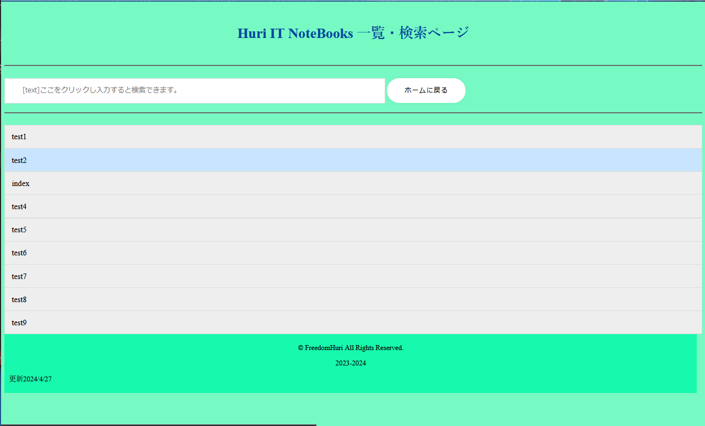

このサイトでは最近IT社会になってきたこの世の中専門用語だらけだと思います。
若い人も高齢の方も年齢問わず専門用語だらけだと実感していると思います。
そんなIT社会の中あんまり専門用語をわざわざ調べる...
ってのもめんどくさそうと思ったので私の知識を皆様に共有したいと思います。
検索フォーム・一覧ページから調べるかお好きなものをご覧ください。
※すべてのIT用語が乗っているとは限りません。
更新は少しずつやるので最初は少ないです。
ここからは使い方を教えます。
まずはこの説明の下もしくは上にボタンを設置しているので、そこから飛んで下さい
開くとこんな感じになっています(2024年4月27日現在)
※下の画像は開発段階の画像です。現在の画面とは異なります。
この画面真ん中にある枠は一覧になります。
上には検索フォームがあり一覧の中から絞り込みができます。
© FreedomHuri 2023-2024